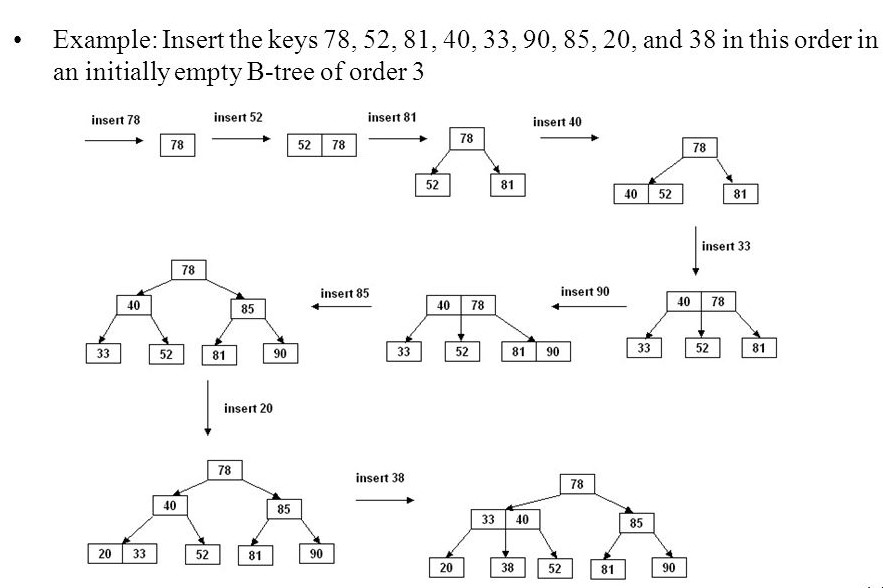
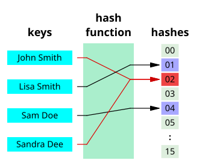

Project 2: Storage Enhancement
Our goal here is to optimize data storage and retrieval for a cloud storage system used by Instagram using advanced DSA techniques which will make accessing and storing data faster and more efficient.
Instagram uses a variety of storage systems to handle its massive amounts of data, including PostgreSQL for relational data, Cassandra for distributed storage, and Redis for caching. These systems store data in different formats such as JSON for flexible schema, and binary formats for efficient storage and retrieval.
B-Trees: Efficient Database Indexing
What it is: A B-Tree is a self-balancing tree data structure that maintains sorted data and allows searches, sequential access, insertions, and deletions in logarithmic time.
Why B-Trees: B-Trees are used in Instagram’s database indexing to quickly locate and access user data such as profiles, posts, and comments without having to scan the entire database.
Pros and Cons:
- Pros: Fast search, insert, and delete operations; good for systems that read and write large blocks of data.
- Cons: More complex to implement; requires balancing after operations.
GitHub Link: Example B-Tree Implementation
Hash Tables: Quick Data Retrieval and Storage
What it is: A hash table is a data structure that maps keys to values for highly efficient lookups. It uses a hash function to compute an index into an array of buckets or slots, from which the desired value can be found.
Why HAsh table: Hash tables are used by Instagram for caching user sessions, frequently accessed data, and metadata. This ensures that data retrieval is extremely fast, which is crucial for a seamless user experience..
Pros and Cons:
- Pros: Constant time complexity for lookups on average; simple to implement.
- Cons: Performance degrades if hash collisions are not handled well; requires a good hash function.
GitHub Link: Example Hash Table Implementation
Segment Trees: Handling Range Queries and Updates
What it is: A segment tree is a data structure that allows querying which of several pre-defined segments a query point lies in, or finding all segments intersecting a query segment.
Why Segment tree: Segment trees are used by Instagram to efficiently handle range queries and updates, such as fetching a range of posts based on timestamps or updating user activity statistics over time.

Pros and Cons:
- Pros: Efficient query and update operations; useful for range queries.
- Cons: More space-consuming compared to simpler structures; complex to implement.
GitHub Link: Example Segment Tree Implementation